코드가 아니라 프로세스가 병목이에요
제목은 'Claude Code의 새 intent.md'지만, intent.md는 Claude Code에 추가된 기능이 아니에요. Anthropic이 공개한 문서 'The AI-Native SDLC playbook'이 개발 과정의 첫 산출물로 제안한 마크다운 파일이에요. 영상은 이 플레이북을 단계별로 빠르게 훑어요.
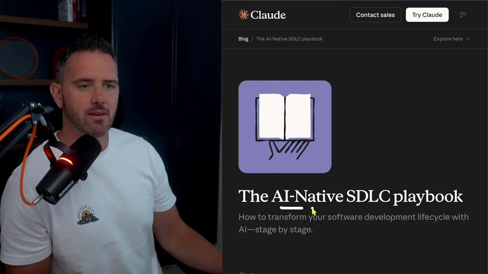
구현 칸이 거의 사라졌어요
SDLC(Software Development Life Cycle)는 계획, 설계, 구현, 테스트, 배포, 유지보수의 여섯 단계로 돌아요. 한 기능이 끝나면 다음 기능이나 버그로 다시 처음부터 시작해요. 에이전트 이전에는 이 중 구현이 가장 길고 비쌌어요.
아래 슬라이드의 위쪽 줄이 에이전트 이전이에요. 주황색 Build 칸이 줄 전체의 절반 가까이를 차지해요. 아래쪽 줄은 에이전트 이후인데, Build가 가느다란 막대로 줄었고 오른쪽 점선 칸이 되찾은 시간이에요.
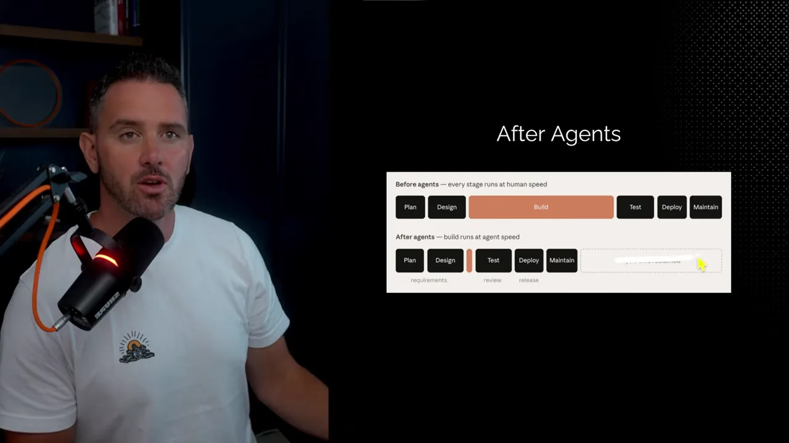
그래서 플레이북의 첫 문장은 '코드는 더 이상 병목이 아니다'예요. 병목은 프로세스로 옮겨 갔어요. 구현을 두 배 빠르게 만든 건 잘했고, 이제 나머지 단계에도 에이전트를 넣자는 거예요. 발표자는 순환도에서 작아진 Build 원에 동그라미를 치고, 남은 단계 전체를 크게 감싸며 이 점을 짚어요.
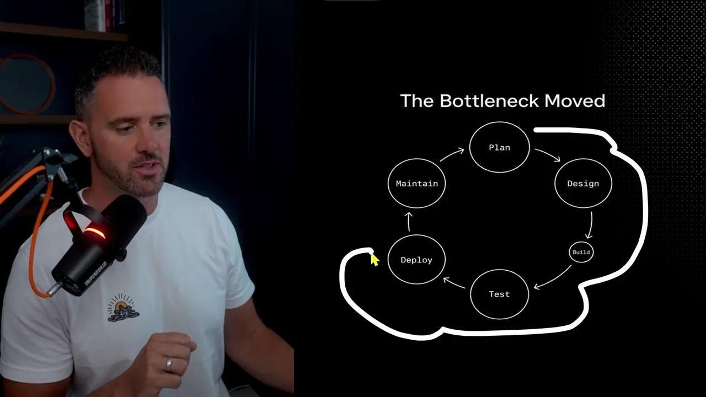
플레이북은 단계마다 전통 방식과 AI(Artificial Intelligence) 네이티브 방식을 표로 비교해요. 오른쪽 열을 보면 계획은 intent.md, 구현은 CLAUDE.md와 스킬, 테스트는 지속적인 eval, 배포는 훅을 승인 게이트로 쓰는 에이전트 리뷰예요. 이 영상의 나머지가 이 표를 한 줄씩 풀어 가는 과정이에요.
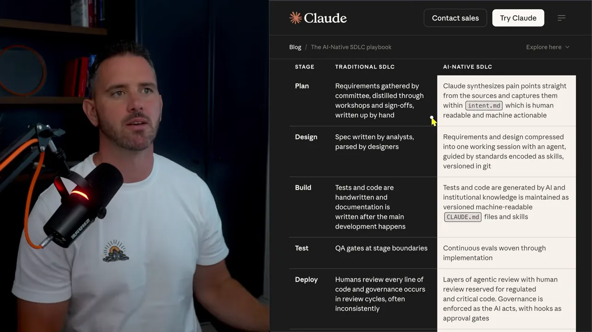
계획: 에이전트가 먼저 묻고 intent.md로 남겨요
에이전트가 나를 인터뷰해요
예전 계획 단계는 요구사항을 모으고, PRD(Product Requirements Document)를 쓰고, 워크숍을 열고, 이해관계자와 이야기하는 일이었어요. 새 방식은 반대로 시작해요. 에이전트가 기능이나 버그, 제품에 대해 사람을 인터뷰하면서 맥락을 쌓아요.
핵심은 에이전트가 완전히 이해할 때까지 계속 질문하게 두는 거예요. 사람은 자기 경험과 도메인 지식을 대화에 최대한 쏟아부어요. 발표자는 화면에 인터뷰형 스킬 세 개를 띄워요. 흰 상자로 강조한 가운데 것이 Matt Pocock의 /grill-me예요.
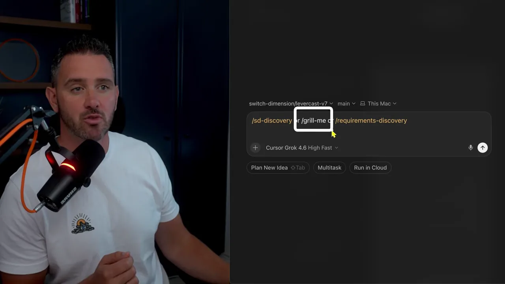
/sd-discovery는 발표자 자신의 스킬이고, 셋 다 에이전트가 사람에게 질문을 퍼붓게 만드는 스킬이에요.
영상 01:30에서 보기
intent.md는 사람도 읽고 기계도 실행해요
인터뷰가 끝나면 에이전트가 출처에서 바로 문제점을 뽑아 intent.md에 담아요. 슬라이드 문구처럼, 사람이 읽을 수 있고 기계가 바로 실행할 수 있는 문서예요.
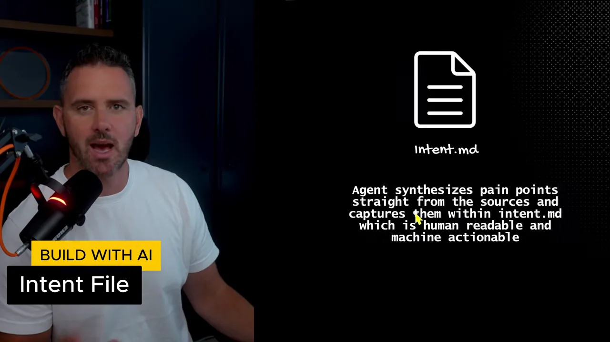
플레이북은 두 방식을 카드 두 장으로 비교해요. 왼쪽 전통 방식에서는 아이디어가 백로그 항목, 사용자 스토리, 스토리 포인트, 정제 회의를 거치며 손이 바뀌어요. 오른쪽 AI 네이티브 방식에서는 아이디어를 낸 사람이 Claude와 브레인스토밍하고 결과를 직접 intent.md로 남겨요.
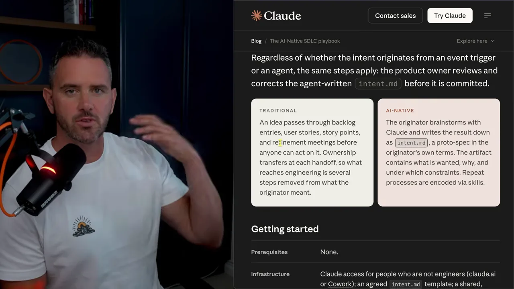
아티팩트 체인의 첫 고리
단계를 하나 지날 때마다 문서가 하나씩 생겨요. intent.md 다음에 spec, 그다음에 plan이 이어지는 식이에요. 이 사슬을 아티팩트 체인이라고 불러요. 영상에 흩어져 나온 단계별 산출물과 담당을 한 장에 모으면 이래요.
프로젝트에서는 intent라는 폴더를 하나 만들고 그 안에 intent.md를 저장하면 돼요. Cursor든 Claude Code든 Codex든 상관없어요. 발표자는 다크 모드 추가를 예로 들어 에이전트와 대화한 뒤 그 결과를 이 폴더에 저장해요.
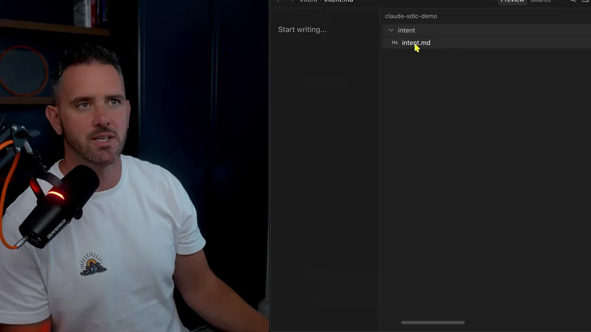
발표자는 워크플로를 무엇으로 정하든 팀 안에서 표준으로 굳히고 자주 바꾸지 말라고 해요. 그래야 사람, 에이전트, 스킬이 모두 같은 흐름 위에서 일하고, 거기서부터 키워 갈 수 있어요.
누가 쓰고, 누가 고르나요
intent.md를 처음 쓰는 사람을 오리지네이터라고 불러요. 팀의 전문가일 필요가 없어요. 버그를 신고하는 고객, 기능 아이디어가 있는 PM(Product Manager), 프로세스를 고치고 싶은 개발자 누구든 될 수 있어요.
에이전트가 초안을 쓰면 오리지네이터가 다시 읽고 고쳐요. 플레이북의 실행 단계 4번이 바로 이 내용이에요. 그 아래에는 청구 상태 조회 기능을 예로 든 intent.md 견본이 이어져요. 문제, 기대 결과, 영향받는 사용자와 시스템 순으로 적혀 있어요.
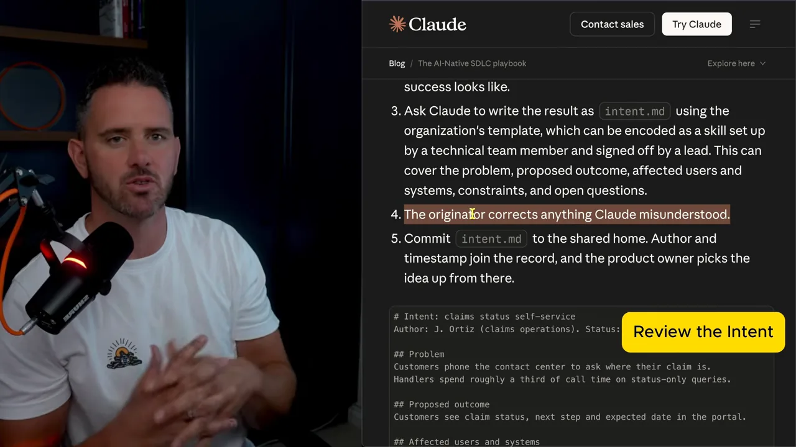
의도가 쌓이면 파일 이름 앞에 주제를 붙여 구분해도 돼요. 발표자는 intent 대신 discovery라는 이름을 쓰는데, 화면에서는 claims-process-discovery.md처럼 이름을 붙여요.
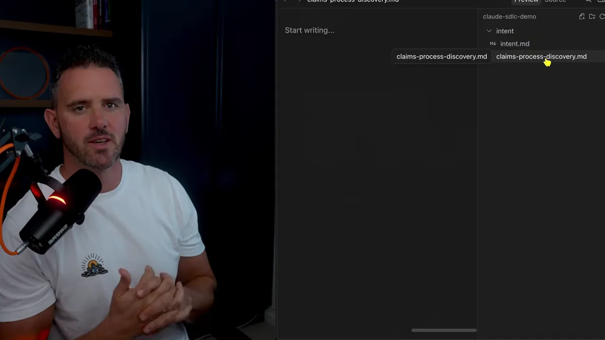
모인 의도는 제품 책임자(product owner)가 백로그로 정리해요. 마크다운 파일 목록이어도 되고, Notion이나 Linear에 모아도 돼요. 발표자는 에이전트에게 트리아지를 맡겨요. 아래 보드의 카드마다 Frontend, Small, Feature, P0 같은 태그가 붙어 있어요.
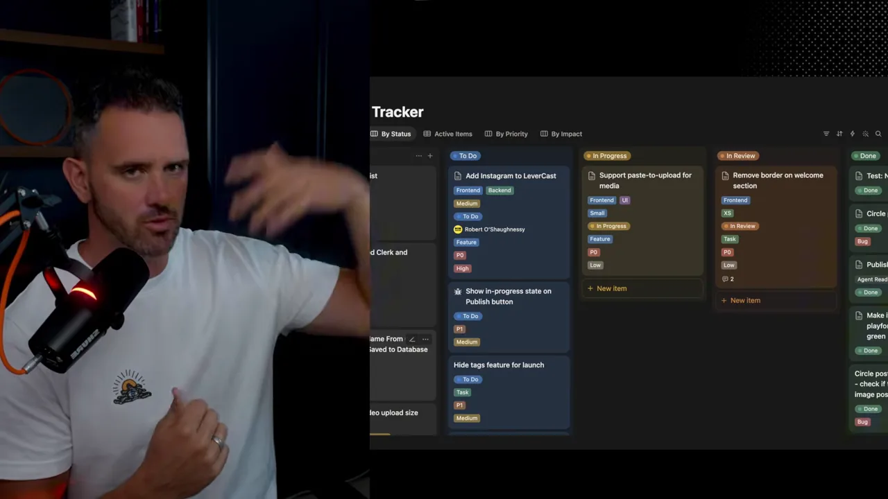
설계: intent.md에서 spec.md를 뽑아요
intent.md가 커밋되거나 어떤 식으로든 승인되면, 다음은 spec이에요. 플레이북은 이때 훅이나 정해진 절차로 spec이 자동으로 만들어지게 하라고 해요. 사람이 매번 시키지 않아도 다음 단계가 시작되게 하는 거예요.
Anthropic은 전용 스킬 대신 예시 프롬프트를 줘요. 발표자는 이걸 prompts/intent-to-spec.md로 저장해 두었어요. 세 문단이 각각 할 일을 하나씩 맡아요. 첫 문단은 intent.md를 읽고 요구사항·설계 spec을 만들라는 지시, 둘째 문단은 스킬로 브랜드 가이드·보안 정책·UX(User Experience) 기준을 지키라는 지시, 셋째 문단은 결과를 spec.md로 남기라는 지시예요.
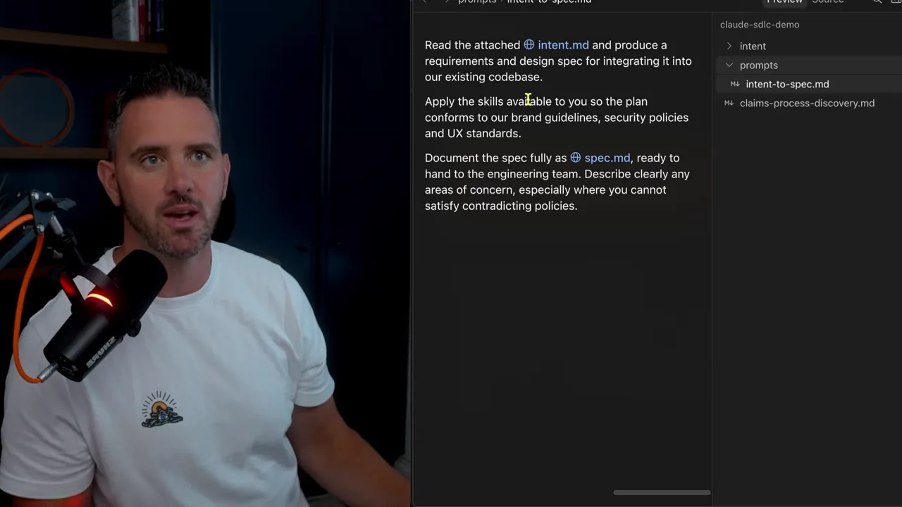
이 프롬프트를 각 도구의 기본 플랜 모드에 넣어도 되고, 팀 방식에 맞는 spec을 만드는 스킬을 따로 만들어도 돼요. 발표자는 여기서도 정답은 하나가 아니라고 해요.
정책은 쓰는 순간 적용돼요
어떤 방식으로 만들든 spec에는 조직의 모범 사례가 반영돼야 해요. 스타일 가이드나 정책을 AGENTS.md 파일에 두거나 스킬로 묶어 두고, spec을 만들 때 그 규칙을 지키게 해요. 이게 플레이북이 말하는 거버넌스예요.
플레이북의 'Governance considerations' 문단이 이 차이를 짚어요. 몇 주 뒤 리뷰에서 위반을 찾아내는 게 아니에요. 살아 있는 정책을 spec을 쓰는 동안 읽고 적용해요. spec, spec을 만든 프롬프트, 그때 쓰인 스킬 버전은 모두 버전 관리에 남아요.
발표자는 이 원칙이 spec에만 해당하지 않는다고 덧붙여요. 체인의 모든 산출물에 똑같이 적용돼요.
구현: plan.md를 캐묻고 가드레일 안에서 맡겨요
intent와 spec을 넣으면 plan.md가 나와요
구현은 엔지니어가 intent와 spec을 에이전트에 넣는 데서 시작해요. Claude Code든 Cursor든 플랜 모드 같은 곳에 두 문서를 넣으면 plan.md가 나와요. 발표자의 다이어그램에서 Plan과 Design은 'Human - Agent', Build는 'Agent'로 표시돼 있어요. 오른쪽에서는 spec.md에 skills/policy가 들어가요.
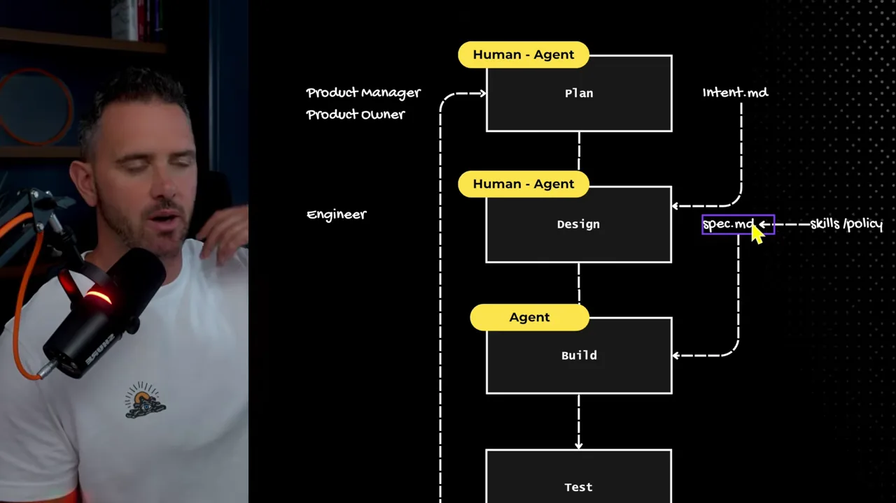
플레이북은 계획을 그냥 받아들이지 말고 캐물으라고 해요. 이 변경이 뭘 깨뜨릴 수 있는지, 어느 단계가 가장 위험한지, Claude가 고르지 않은 다른 선택지는 뭔지 물어요. 강조된 4번이 목표를 정해요. 대화를 한 번도 보지 못한 엔지니어가 plan만 보고도 구현할 수 있을 때까지 다듬는 거예요.
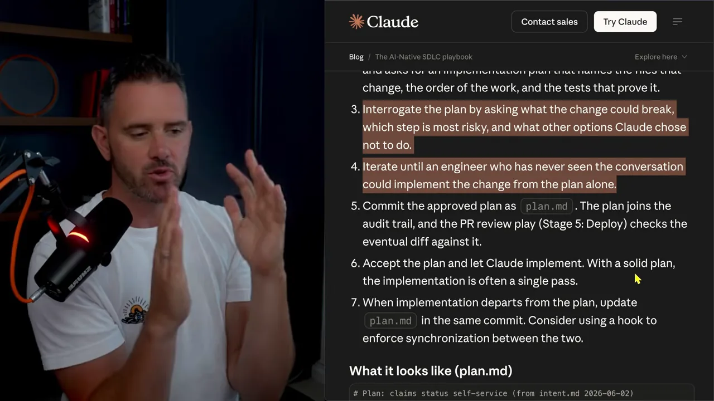
이 기준이 중요한 이유가 있어요. 한 에이전트가 SDLC 전체를 처리하지 않기 때문이에요. 단계마다 독립된 에이전트와 서브에이전트가 맡고, 각자 이전 대화 없이 처음부터 시작해요. 그래서 계획과 의도를 문서로 넘겨야 해요.
발표자의 실제 워크플로가 이걸 보여 줘요. 맨 위 Human의 Issue에서 시작해, Agent 2~6이 프로토타입, 계획, 구현, 테스트, PR, 보안 점검을 하나씩 맡아요. 가운데 노란 Human Review 한 칸만 사람이에요.
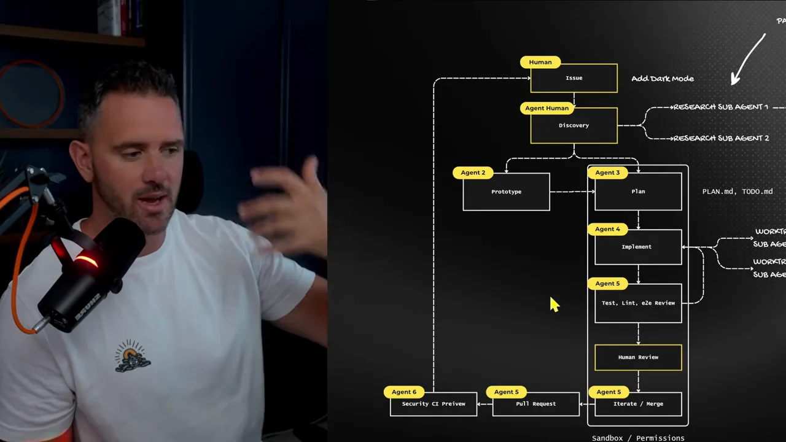
plan.md에는 네 가지가 들어가요
계획 쓰는 법은 수십 가지지만, Anthropic의 견본은 네 칸이에요. 바뀌는 파일, 작업 순서, 위험, 그리고 증명이에요. 증명은 일이 제대로 됐는지 확인할 성공 기준과 검사인데, 린팅과 테스트처럼 결정적인 방식이 좋다고 해요.
기업에서는 거버넌스가 큰 몫을 해요. intent, spec, plan의 버전을 남기고, 누가 고쳤는지와 어떻게 바뀌었는지도 남겨요. 발표자는 함께 일한 회사들이 이 부분을 특히 어려워한다고 해요. 그래도 이 기록이 있어야 DORA(DevOps Research and Assessment) 지표로 선행·후행 지표를 추적하고, AI가 정말 효과가 있는지 보여 줄 수 있어요.
오토 모드와 권한
구현을 빠르게 하려고 플레이북은 오토 모드를 권해요. 엔지니어가 계획을 승인하면 Claude가 수정마다 묻지 않고 바로 적용하는 방식이에요. 화면의 둘째 문단이 무게중심이 옮겨 간다고 정리해요. 에이전트가 고치는 걸 지켜보는 일에서, 긴 자율 작업 뒤 산출물을 리뷰하는 일로요.
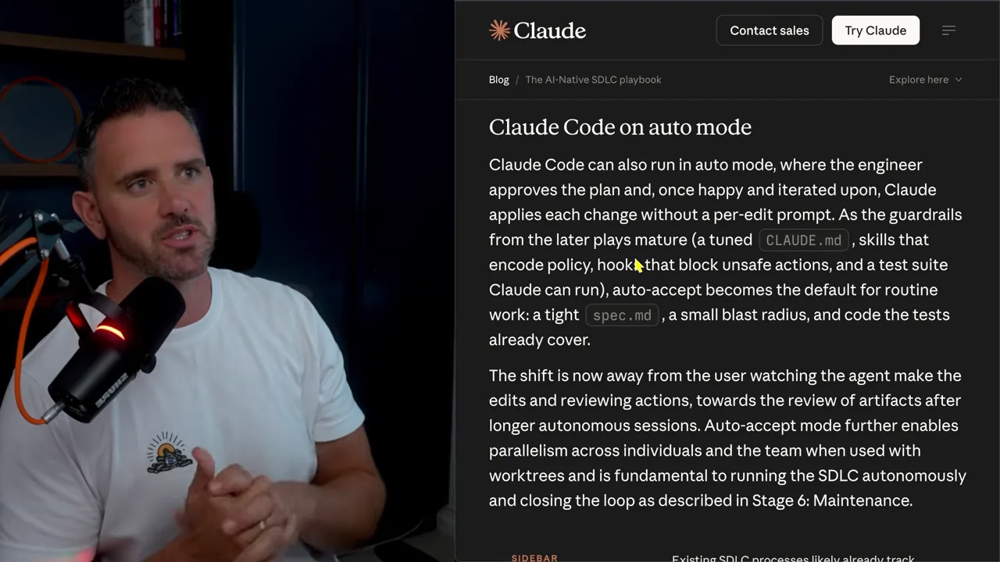
CLAUDE.md, 정책 스킬, 훅, 테스트예요.
영상 08:58에서 보기
발표자는 조직마다 다르다고 단서를 달아요. 통제가 엄격한 환경이라면 저장소에서 권한을 촘촘하게 잡고 시작해, 쓰면서 넓혀 가라고 해요. 에이전트가 쓸 도구, 접근할 웹 소스, 받을 패키지를 정책으로 고정하면 사람 없이도 훨씬 빨리 움직여요. 아래 그림의 네 가지 접근 권한이 그 대상이에요.
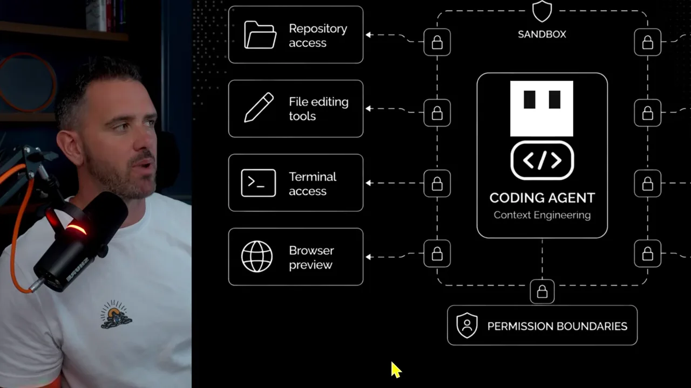
플레이북은 워크트리도 권해요. 여러 에이전트가 동시에 여러 작업을 해도 파일이 부딪히지 않아요.
훅이 궤도를 지켜요
사람 없이 돌아가게 하면서도 궤도를 벗어나지 않게 하는 건 훅이에요. 다이어그램의 Build 옆 흰 상자에 구현 단계 훅의 예가 네 개 적혀 있어요. 구현이 끝나면 plan 갱신, 특정 폴더 편집 차단, 린터 실행, 자격 증명 차단이에요. 발표자는 승인하지 않은 npm 패키지 사용을 막는 것도 예로 들어요.
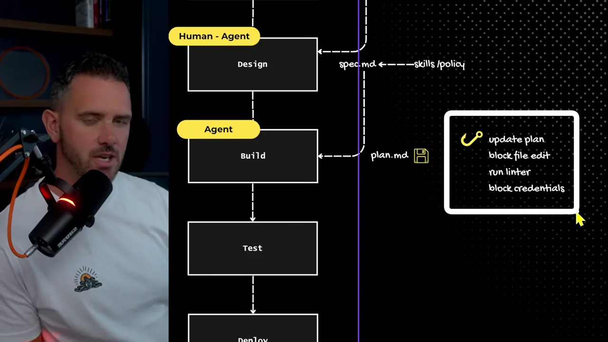
좋은 에이전트 하네스는 서브에이전트도 돌려요. 계획이 서면 서로 독립된 작업으로 쪼개고, 병렬로 돌릴 수 있는 건 워크트리에 나눠 줘요. 발표자는 이 기능이 Cursor, Claude Code, Codex에 이미 들어 있다고 해요. 그림에서는 Agent 0, 1, 2가 Build를 나눠 맡아요.
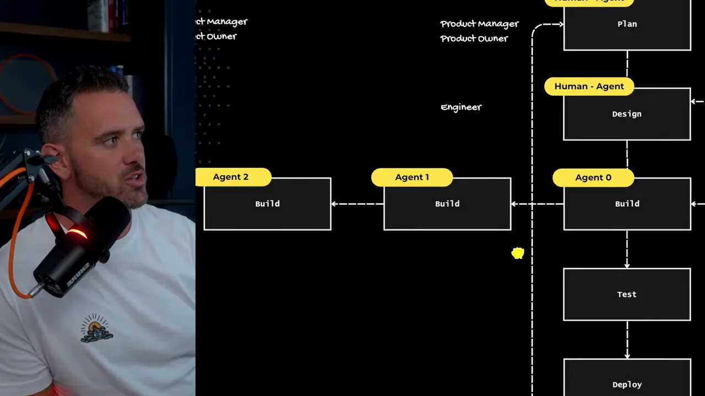
테스트: 사람이 보기 전에 에이전트가 먼저 검사해요
전통 방식에서 테스트는 일을 멈춰 세우는 단계였어요. 작업을 개발 환경에 올리고 테스터나 QA(Quality Assurance)가 올 때까지 며칠을 기다려요. 그다음 수정, 피드백이 오가면서 시간이 꽤 들어요.
AI 네이티브 방식은 사람이 보기 전에 에이전트가 최대한 많이 검사하게 해요. 플레이북의 카드 두 장이 그 차이를 보여 줘요. 왼쪽은 '작동한다는 신호가 늦게 온다'예요. 오른쪽은 세션이 스스로 확인할 방법을 받아서, 테스트·빌드·스크린샷을 통과할 때까지 반복한다는 내용이에요.
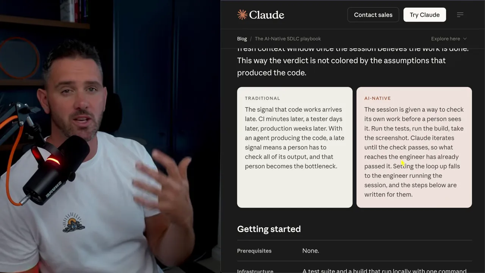
발표자는 자기 워크플로 그림으로 이 단계를 설명해요. 플레이북과 조금 다르지만 거의 같다고 해요. 구현이 끝나면 Agent 5의 'Test, Lint, e2e Review' 칸으로 넘어가요. 에이전트가 테스트를 쓰고 통과시키고, 린트와 빌드로 오류가 없는지 확인해요.
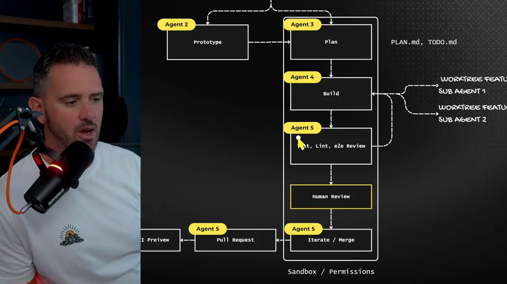
한 단계 더 나가면 Playwright나 브라우저 도구로 에이전트가 앱을 직접 써 보고 스크린샷까지 찍어요. 발표자는 이걸 잘하는 예로 Cursor의 클라우드 에이전트를 들어요. 서버를 직접 띄워 테스트하고 화면 녹화까지 넘겨준다고 해요. 테스트가 충분히 꼼꼼하면 사람 리뷰 시간이 크게 줄어요.
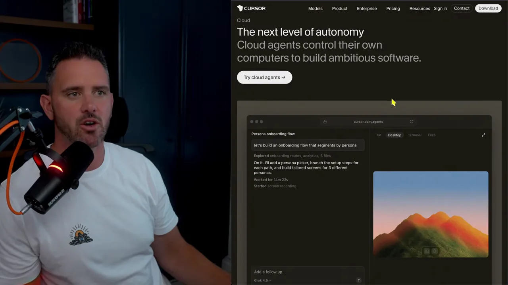
모델이나 스킬을 바꿀 때는 eval
Anthropic은 스킬을 바꾸거나 모델을 올릴 때마다 eval을 돌리라고 해요. 발표자는 최적화에 가까운 단계라고 하면서도, 핵심은 CI(Continuous Integration) 안에 지속적인 평가를 넣는 거라고 해요. 화면의 실행 순서가 방법을 보여 줘요.
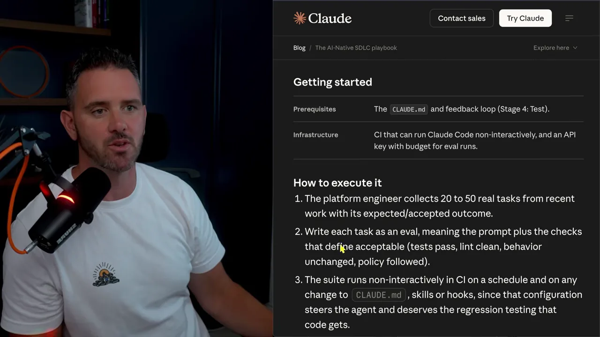
CLAUDE.md나 스킬, 훅이 바뀔 때도 돌려요.
영상 12:05에서 보기
발표자는 20개 정도로 줄여 말해요. 코드베이스에서 해결했던 문제와 기대 결과를 모아 두고, 새 모델이나 새 스킬이 들어오거나 작업 방식이 크게 바뀔 때 돌려요. 그러면 SDLC 전체에 회귀가 생겼는지 바로 알 수 있어요.
배포: PR은 Claude가 먼저 리뷰해요
사람 리뷰까지 끝나면 배포예요. 에이전트는 자기 브랜치나 워크트리에서 작업했으니, 그 변경을 main에 합치거나 PR을 만들어요. PR은 '이렇게 바꿨으니 보고 괜찮으면 main에 넣어 달라'는 요청이에요. 발표자의 화면에는 Cursor가 고친 PR 하나가 떠 있어요.
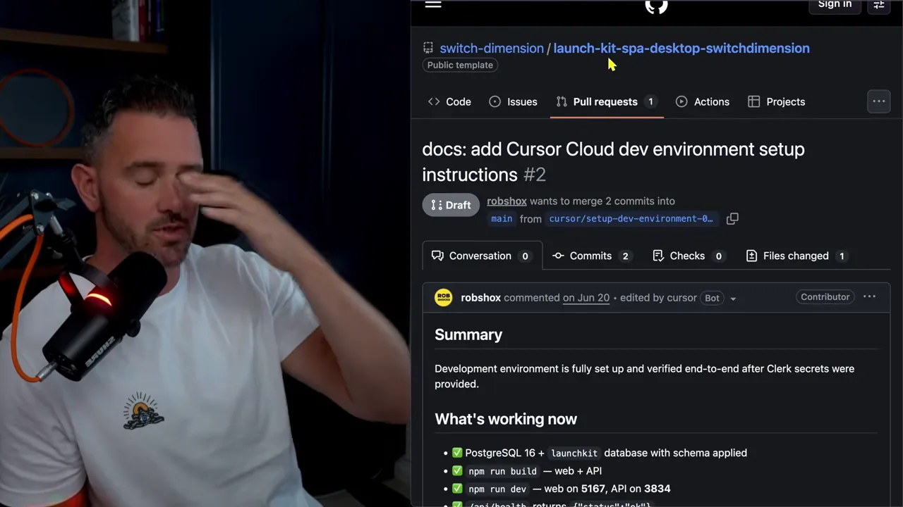
Anthropic은 CI 안에서, 또는 PR이 생길 때마다 Claude가 들어와 정책과 보안 규칙에 맞는지 리뷰하게 하라고 해요. 모두 비동기로 돌아가요. 다이어그램의 빨간 아이콘 옆 두 줄이 그 흐름이에요. 'review PR'로 리뷰하고, 'Address Comments on PR'로 코멘트를 처리해요.
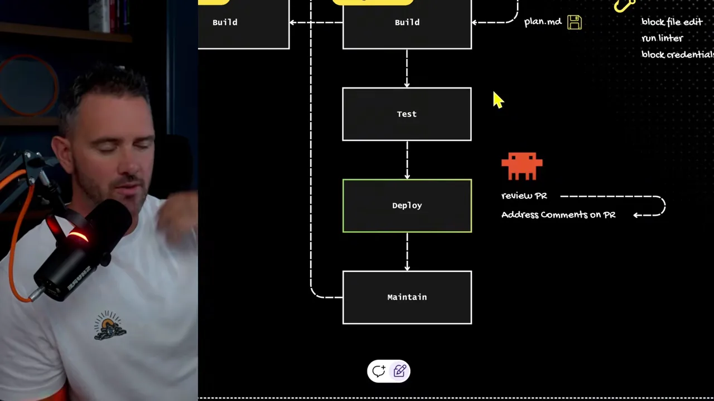
리뷰어 Claude는 PR을 받아들이지 않거나 수정을 요구하는 코멘트를 달 수 있어요. 그러면 다른 Claude Code 인스턴스가 그 코멘트를 처리해요. 각 인스턴스는 AGENTS.md, 스킬, 훅, 린트 설정에 따라 서로 다른 정책을 가질 수 있어요.
배포를 막는 훅
거버넌스 쪽에서는 배포 자체를 막는 훅을 둘 수 있어요. 특정 권한이 있거나, 특정 사람이 승인하거나, 릴리스 게이트를 통과하기 전에는 배포하지 못하게 하는 거예요. 다이어그램 오른쪽에 'block deploy' 갈고리가 하나 더 생겨요.
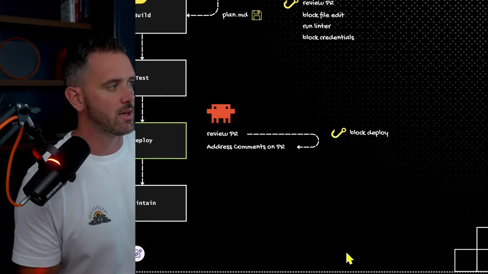
영상에 나온 훅을 단계별로 모으면 이래요.
| 단계 | 영상에 나온 훅 | 하는 일 |
|---|---|---|
| 설계 | spec 자동 생성 | intent.md가 승인되면 spec을 만드는 절차를 띄워요 |
| 구현 | update plan | 구현이 끝나면 plan.md를 갱신해요 |
| 구현 | block file edit, block credentials | 특정 폴더 편집과 자격 증명 노출, 승인 안 한 패키지 사용을 막아요 |
| 구현 | run linter | 코드와 문서가 규칙에 맞는지 결정적으로 확인해요 |
| 배포 | block deploy | 권한, 승인자, 릴리스 게이트 조건이 채워질 때까지 배포를 막아요 |
PR이 정리되면 또 다른 에이전트가 보안 점검과 CI 프리뷰를 돌려요. 린트와 게이트 검사 같은 결정적 검사에, Cursor Bugbot이나 Claude의 보안 리뷰 같은 에이전트 검사를 더해 오류를 찾아요. 앞 섹션 다이어그램의 맨 왼쪽 아래 'Agent 6 Security CI Preview' 칸이 이 단계예요.
유지보수: 경보가 울리면 Claude가 intent.md를 써요
마지막은 유지보수예요. 발표자는 여기서 워크플로가 가장 '야심 찬' 모습이 된다고 해요. 계획부터 배포까지 지나왔고, 이제 이슈는 고쳐졌거나 기능이 코드베이스에 들어가 있어요. 플레이북의 순환도에서는 Claude가 여섯 단계의 한가운데에 있어요.

사람이 시작하지 않아도 돼요
전통 방식의 유지보수는 반응형이에요. 점심을 먹거나 당직을 서다가, 혹은 새벽 3시에 서버가 죽었다는 알림을 받아요. 티켓은 백로그에 쌓여서 그대로 잊히기도 해요. 오른쪽 카드는 다르게 말해요. 컨트롤 밴드 이탈, 티켓, 채널 메시지, 스케줄이 사람 없이 Claude를 불러요.
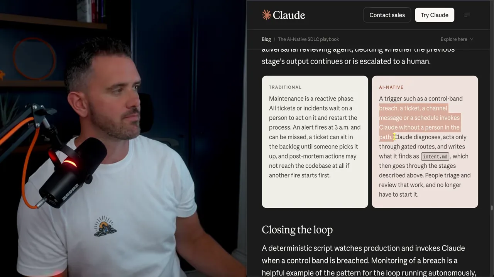
Claude는 비동기로 진단하고 행동해요. 발견한 로그나 받은 티켓, 메시지를 근거로 스스로 intent.md를 만들어요. 앞의 아티팩트 체인 그림에서 Maintain에서 Plan으로 돌아가는 화살표가 이거예요.
지표가 얼마나 벗어나면 움직이나요
실제로는 지킬 지표를 정하는 데서 시작해요. 발표자는 페이지가 죽거나 API(Application Programming Interface) 호출 한도가 급격히 차는 경우를 예로 들어요. 그런 일이 생기면 에이전트가 진단하고 intent를 만들고 해결책을 내놓아요. 모두 사람이 컴퓨터 앞에 앉기 전에 일어나요. 플레이북의 실행 순서는 지표를 고르는 데서 시작해 단계별 대응까지 정해요.

화면 3번 항목의 대응 단계를 표로 옮기면 이래요. 벗어난 정도가 클수록 Claude가 할 수 있는 일이 늘지만, 가장 큰 단계에서도 직접 배포하지는 않아요.
| 지표 이탈 | 무엇이 일어나나요 |
|---|---|
| 1σ | 스크립트가 기록만 남겨요 |
| 2σ | Claude를 읽기 전용으로 불러 진단하게 해요 |
| 3σ | Claude가 행동할 수 있지만, 리뷰 게이트로 가는 PR을 열거나 미리 승인된 런북을 실행하는 데까지만이에요 |
지표의 예로는 CI 테스트 실패율, 배포 후 5xx 비율, PR 사이클 시간이 나와요. 감지는 이동 구간의 평균과 표준편차로 해서 갑작스러운 급증뿐 아니라 느린 변화도 잡아요.
정답은 하나가 아니에요
플레이북 전체의 전제는 에이전트를 구현 단계에만 쓰지 말고 SDLC 전체에 쓰자는 거예요. 단계마다 사람의 시간을 줄이되, 중요한 리뷰 지점에는 사람을 남겨요. 플레이북의 마지막 주황색 상자가 이걸 한 문장으로 말해요.

각 단계에 사람을 몇 명 둘지는 팀과 필요에 달려 있어요. 위험이 낮은 일이라면 에이전트만으로 돌려도 돼요. 발표자는 여러 회사의 AI SDLC를 함께 만들어 보니 모두에게 맞는 방식은 없었다고 해요. superpowers나 BMAD(Breakthrough Method for Agile AI-Driven Development) 같은 방식을 이미 쓰고 있거나 자기만의 방식이 있다면 통째로 버리지 말라고 해요. 단순한 플랜 모드부터 완전 자동 루프, 큰 오케스트레이션 시스템까지 길은 많다고 하면서 마무리해요.
There really is no one size fits all.
모두에게 맞는 하나의 방식은 정말 없어요.
— 영상 15:26